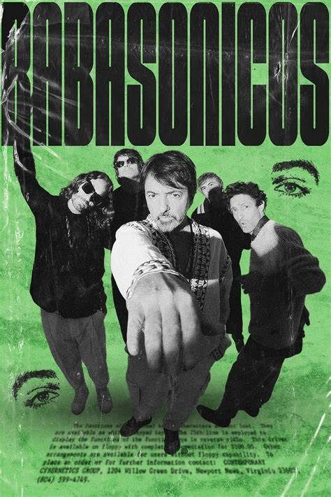
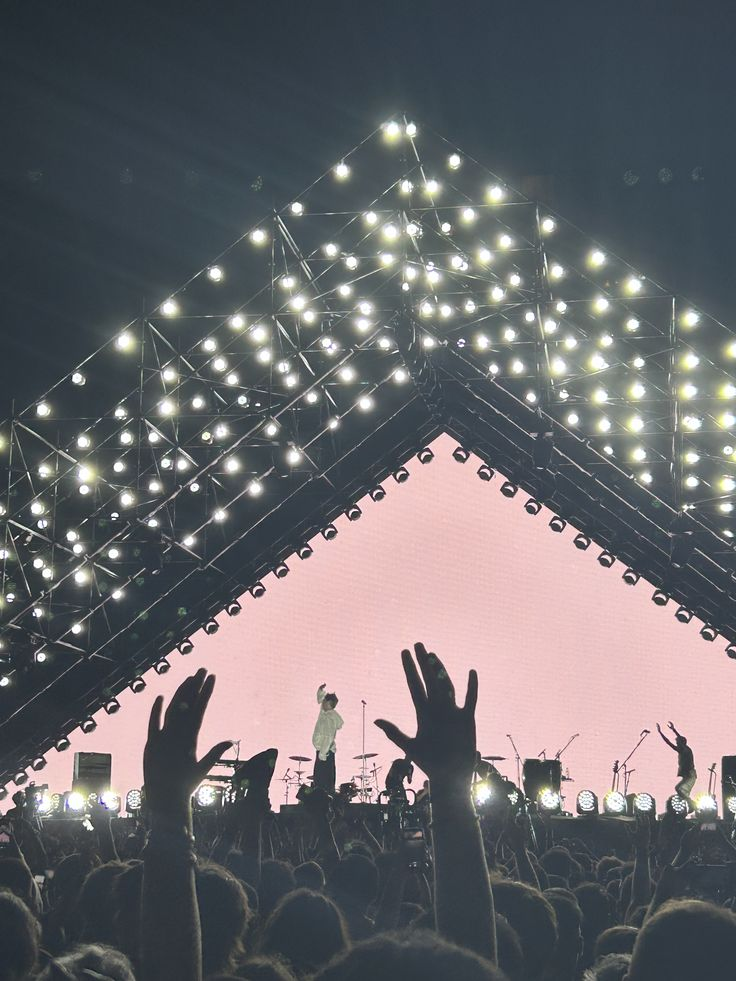

Babasónicos es una banda de rock alternativo argentina formada en 1991. Se destacan por su estilo innovador, estética cuidada y letras provocadoras.
El nombre “Babasónicos” surge de la mezcla de “Sai Baba” y “Los Supersónicos”, reflejando su estilo: una mezcla entre lo místico, lo moderno y lo irónico.
También están influenciados por David Bowie y The Velvet Underground.
El disco “Jessico” (2001) los hizo conocidos en toda Latinoamérica, con hits como “Irresponsables”.
Babasónicos no es solo música: cuidan su imagen, arte y videoclips.
Han ganado premios Gardel, MTV Latinoamérica y reconocimiento internacional.
Han tocado en México, Chile, España y Estados Unidos.
Sus letras provocativas generaron polémica, aumentando su fama.
En 2008 falleció Gabriel Manelli.
Cambian su sonido en cada disco sin perder identidad.


"Babasónicos no sigue el rock… lo reinventa."